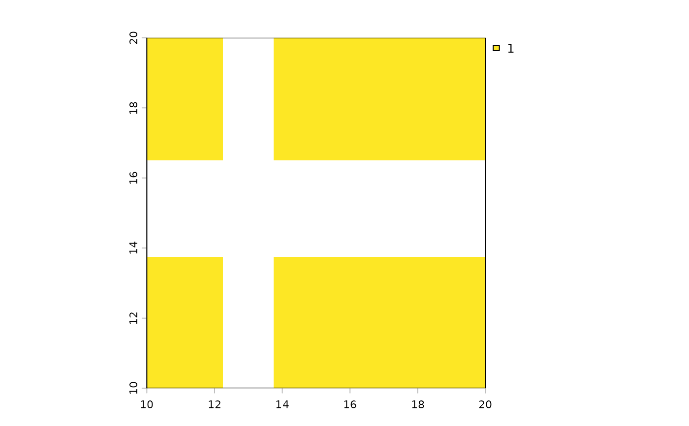

Raster dimensions in kilometres for lon/lat SpatRaster
Source:R/spat_raster_dims_km.R
raster_dims_km.RdCompute approximate cell size (east–west and north–south) in kilometres at
the raster centre, and the raster extent width/height in kilometres, for an
unprojected longitude/latitude SpatRaster.
Arguments
- r
A
terra::SpatRasterin longitude/latitude coordinates (degrees).- exclude_na
Logical. If
TRUE, also returnextent_width_occupiedandextent_height_occupied, after excluding all columns/rows that are onlyNA. Default isFALSE.- warning
Logical. If
TRUE, prints warning for multi-layer rasters and for other checks. Default isTRUE.
Value
A tibble with:
ncol,nrow: raster dimensions (cells).cell_width,cell_height: centre cell size (km).extent_width,extent_height: extent size (km).If
exclude_naisTRUE, alsoextent_width_occupied,extent_height_occupied.
Details
The function uses terra::distance for width/height calculations, and includes an anti-meridian guard: if the longitudinal span exceeds 180 degrees (global extents like
-180, 180), the geodesic betweenxminandxmaxcollapses to zero. In that case, the extent width is estimated asncol(r) * cell_width.East-west cell width varies with latitude; width is calculated at the raster's centre latitude.
North-south cell height varies slightly with latitude; centre value is reported.
The CRS must be a geographic lon/lat CRS (e.g., EPSG:4326).
Optionally, you can exclude any row or column that is completely NA (not just outer cells, but any row or column that consists entirely of NA values), by using the
exclude_na = TRUEargument. When enabled, returns additional columnsextent_width_occupiedandextent_height_occupied, which are calculated as the number of internal columns/rows not completely NA times the cell size at raster centre. This is useful when a raster contains large internal regions (rows, columns) of missing data (e.g., ocean bands between landmasses).If
exclude_na = TRUEandrhas multiple layers, only the first layer is used for determining non-NA rows and columns.
Examples
require(terra)
require(dismo)
require(tibble)
options(tibble.width = 400)
# Global lon/lat raster (1-degree)
r1 <- terra::rast()
raster_dims_km(r1)
#> # A tibble: 1 × 6
#> ncol nrow cell_width cell_height extent_width extent_height
#> <dbl> <dbl> <dbl> <dbl> <dbl> <dbl>
#> 1 360 180 111. 111. 40075. 20038.
# This gives error as input raster has no values:
# raster_dims_km(r1, exclude_na = TRUE)
# Regional raster over Europe
r2 <- terra::rast(
ncols = 40, nrows = 40, xmin = 10, xmax = 20,
ymin = 10, ymax = 20, vals = 1L)
# make some rows and columns NA
r2[15:25, ] <- NA
r2[, 10:15] <- NA
plot(r2)

raster_dims_km(r2)
#> # A tibble: 1 × 6
#> ncol nrow cell_width cell_height extent_width extent_height
#> <dbl> <dbl> <dbl> <dbl> <dbl> <dbl>
#> 1 40 40 26.9 27.8 1075. 1113.
raster_dims_km(r2, exclude_na = TRUE)
#> # A tibble: 1 × 8
#> ncol nrow cell_width cell_height extent_width extent_height
#> <dbl> <dbl> <dbl> <dbl> <dbl> <dbl>
#> 1 40 40 26.9 27.8 1075. 1113.
#> extent_width_occupied extent_height_occupied
#> <dbl> <dbl>
#> 1 914. 807.
# Example with real multi-layer raster files from dismo package
fnames <- list.files(
path = fs::path(system.file(package = "dismo"), "ex"),
pattern = "grd", full.names = TRUE)
r3 <- terra::rast(fnames)
raster_dims_km(r3)
#> # A tibble: 1 × 6
#> ncol nrow cell_width cell_height extent_width extent_height
#> <dbl> <dbl> <dbl> <dbl> <dbl> <dbl>
#> 1 186 192 55.1 55.7 10223. 10687.
# a single column is completely NA in the first layer
# raster_dims_km uses the first layer to check for NA rows/columns
raster_dims_km(r3, exclude_na = TRUE, warning = FALSE)
#> # A tibble: 1 × 8
#> ncol nrow cell_width cell_height extent_width extent_height
#> <dbl> <dbl> <dbl> <dbl> <dbl> <dbl>
#> 1 186 192 55.1 55.7 10223. 10687.
#> extent_width_occupied extent_height_occupied
#> <dbl> <dbl>
#> 1 10031. 10687.
# the same as previous
raster_dims_km(r3[[1]], exclude_na = TRUE, warning = FALSE)
#> # A tibble: 1 × 8
#> ncol nrow cell_width cell_height extent_width extent_height
#> <dbl> <dbl> <dbl> <dbl> <dbl> <dbl>
#> 1 186 192 55.1 55.7 10223. 10687.
#> extent_width_occupied extent_height_occupied
#> <dbl> <dbl>
#> 1 10031. 10687.
raster_dims_km(r3[[2]], exclude_na = TRUE, warning = FALSE)
#> # A tibble: 1 × 8
#> ncol nrow cell_width cell_height extent_width extent_height
#> <dbl> <dbl> <dbl> <dbl> <dbl> <dbl>
#> 1 186 192 55.1 55.7 10223. 10687.
#> extent_width_occupied extent_height_occupied
#> <dbl> <dbl>
#> 1 10087. 10687.